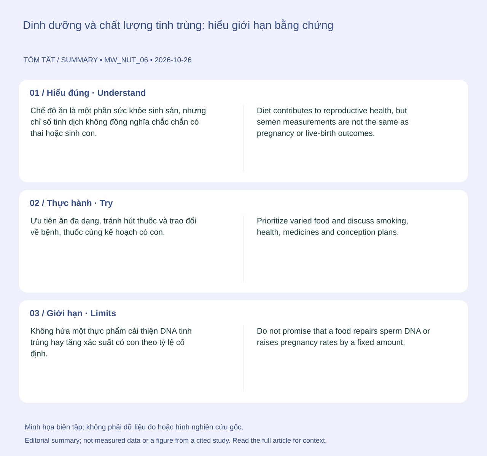

Ưu tiên ăn đa dạng, tránh hút thuốc và trao đổi về bệnh, thuốc cùng kế hoạch có con. Nếu đang khó có thai, đánh giá cả hai phía thay vì chỉ tự mua viên bổ tinh trùng; kiểm tra thành phần nếu đang dùng nhiều sản phẩm.
Hiểu đúng
Chế độ ăn là một phần sức khỏe sinh sản, nhưng chỉ số tinh dịch không đồng nghĩa chắc chắn có thai hoặc sinh con. Hướng dẫn nam khoa nêu lợi ích lâm sàng của nhiều chất bổ sung chống oxy hóa vẫn chưa chắc chắn. 123

📊 Sơ đồ tóm tắt do biên tập tạo. Không phải số liệu đo, hình giải phẫu hay hình lấy từ nghiên cứu trích dẫn.(Mở sơ đồ tóm tắt biên tập ↗)
Bạn có thể làm gì?
Ưu tiên ăn đa dạng, tránh hút thuốc và trao đổi về bệnh, thuốc cùng kế hoạch có con. Nếu đang khó có thai, đánh giá cả hai phía thay vì chỉ tự mua viên bổ tinh trùng; kiểm tra thành phần nếu đang dùng nhiều sản phẩm.
Giới hạn cần biết
Không hứa một thực phẩm cải thiện DNA tinh trùng hay tăng xác suất có con theo tỷ lệ cố định. Nghiên cứu quan sát về ăn uống không chứng minh hiệu quả điều trị.
Khi nào cần tư vấn?
Khó có thai, đau hoặc thay đổi tinh hoàn cần đánh giá chuyên môn; không chờ hết nhiều đợt bổ sung mới khám.
WHO — Healthy diet — Public health guidance. Hỗ trợ: Chế độ ăn đa dạng và chất lượng thực phẩm.
Cập nhật nội dung và nguồn: 2026-10-26. Nội dung giáo dục; chưa có xác nhận duyệt bởi bác sĩ.
📚
Nguồn tham khảo và giới hạn bằng chứng
Nguồn chính: AUA/ASRM — Diagnosis and treatment of infertility in men: guideline part II. Các nguồn bổ sung và phạm vi hỗ trợ được liệt kê trong bài. Cập nhật 26/10/2026; chưa có xác nhận duyệt bởi bác sĩ.
Prioritize varied food and discuss smoking, health, medicines and conception plans. Assess both partners when conception is difficult rather than relying on sperm supplements. Check overlapping product ingredients.
Understanding the topic
Diet contributes to reproductive health, but semen measurements are not the same as pregnancy or live-birth outcomes. Male-fertility guidance notes uncertain clinical benefit for many antioxidant supplements. 123
📊 Original editorial summary. Not measured data, an anatomical diagram or a figure reproduced from a cited study.(Editorial summary artwork ↗)
What you can do
Prioritize varied food and discuss smoking, health, medicines and conception plans. Assess both partners when conception is difficult rather than relying on sperm supplements. Check overlapping product ingredients.
What the evidence cannot tell you
Do not promise that a food repairs sperm DNA or raises pregnancy rates by a fixed amount. Dietary associations are not proof of treatment efficacy.
When to seek advice
Difficulty conceiving, pain or testicular changes warrant assessment rather than waiting through repeated supplement courses.
WHO — Healthy diet — Public health guidance. Supports: Dietary variety and food quality.
Content and sources updated: 2026-10-26. Educational content; clinical sign-off has not been recorded.
📚
References and evidence limits
Primary reference: AUA/ASRM — Diagnosis and treatment of infertility in men: guideline part II. Additional sources and their scope appear in the article. Updated 26 October 2026; clinical sign-off has not been recorded.